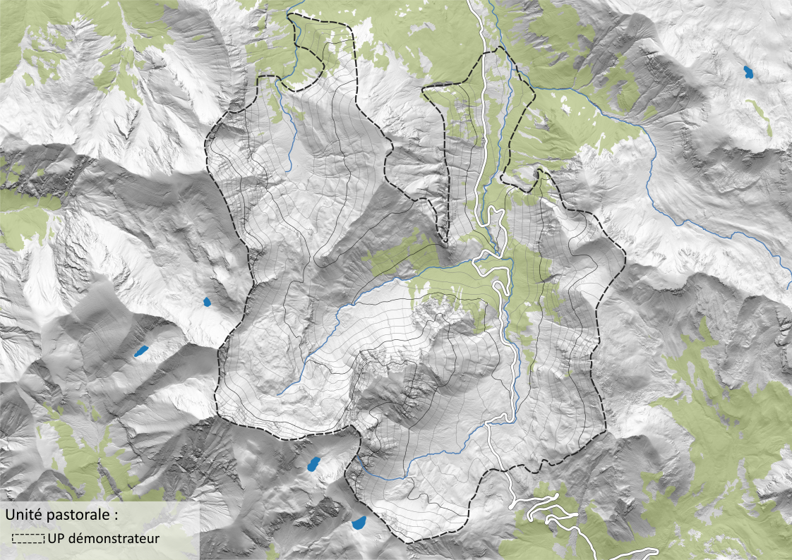
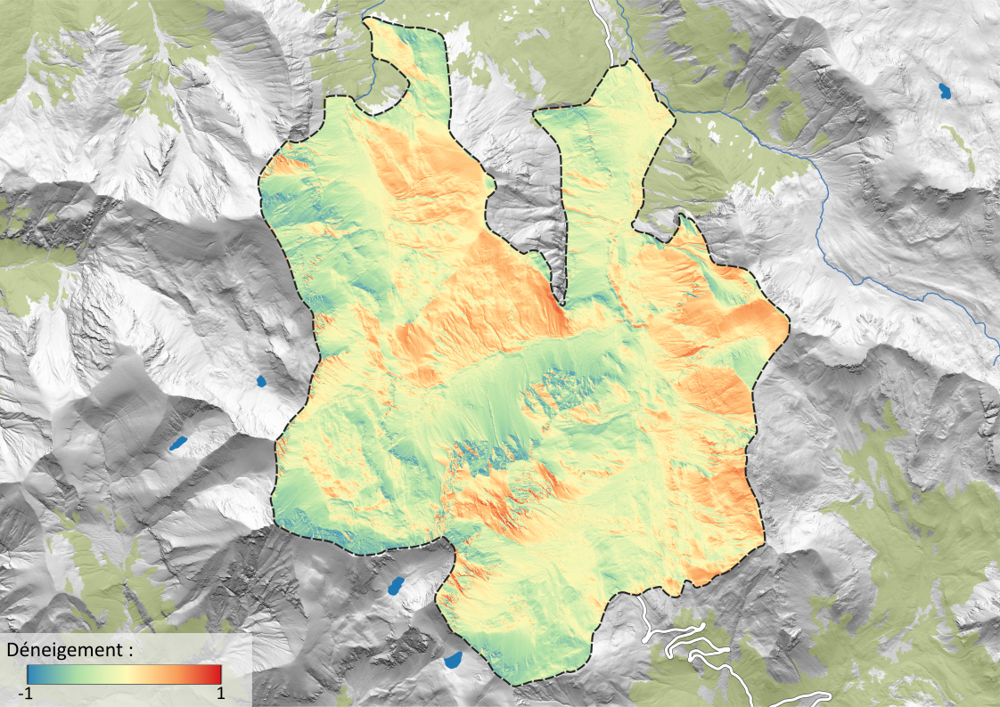
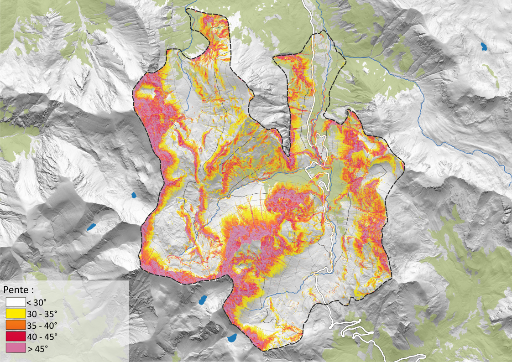
Nous traitons les données LiDAR de l’IGN pour caractériser la topographie des estives et la hauteur de la végétation à très haute résolution spatiale (1 m).
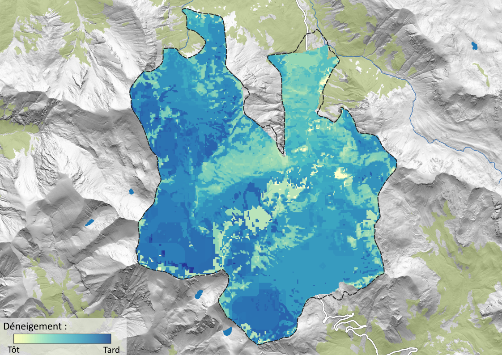
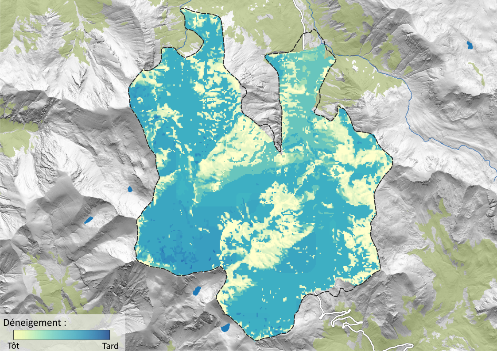
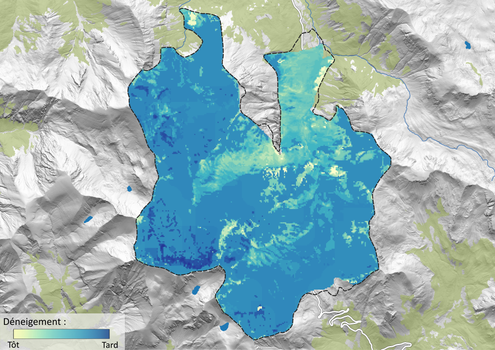
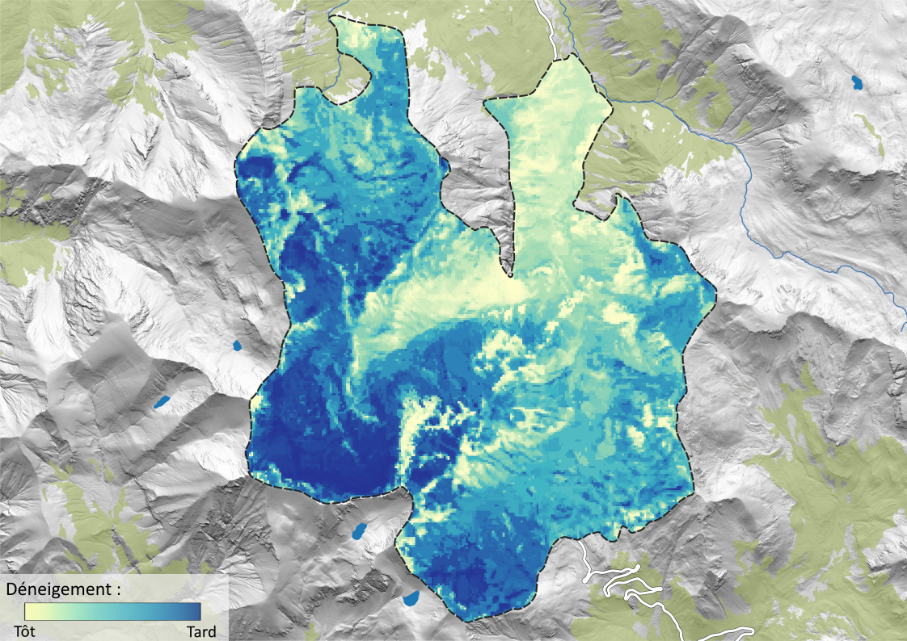
En collaboration avec le CESBIO (CNRS, Université de Toulouse), nous déterminons pour chaque année les dates de déneigement printanier et de réenneigement automnal (20 m de résolution). Les conditions météorologiques durant la période sans neige sont également produites afin de modéliser la pousse saisonnière de l’herbe.
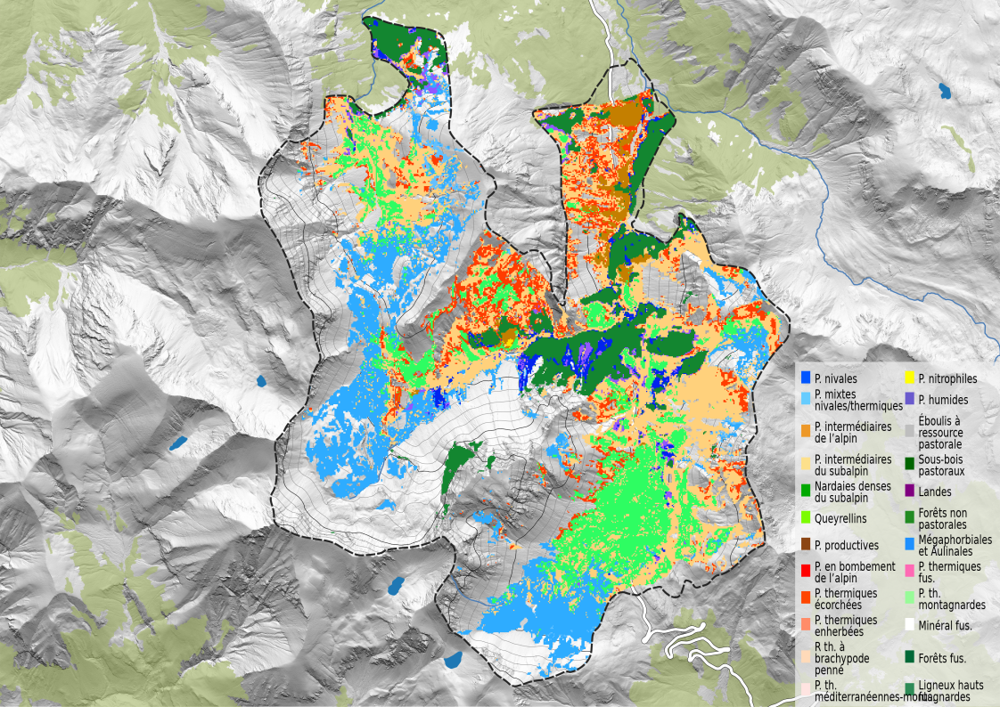
Nous réalisons des cartes de distribution des habitats selon leur vocation pastorale, à partir de cartographies existantes ou de nouveaux produits combinant imagerie satellite et données de terrain.
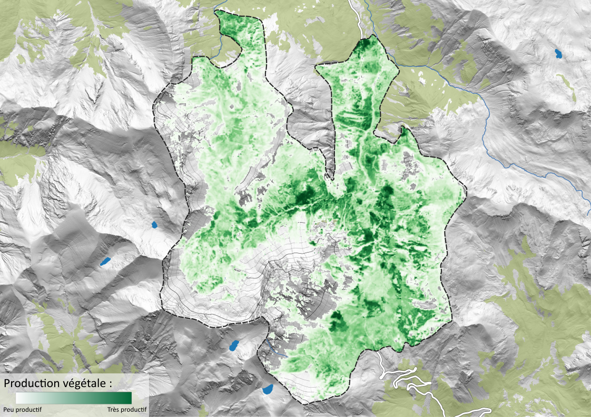
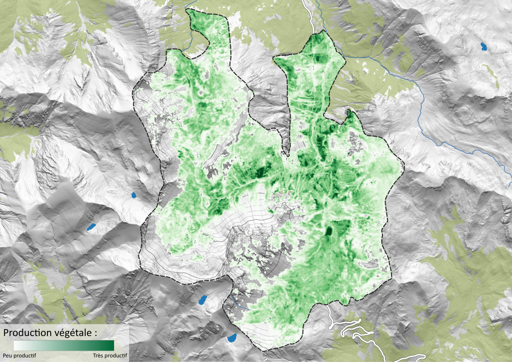
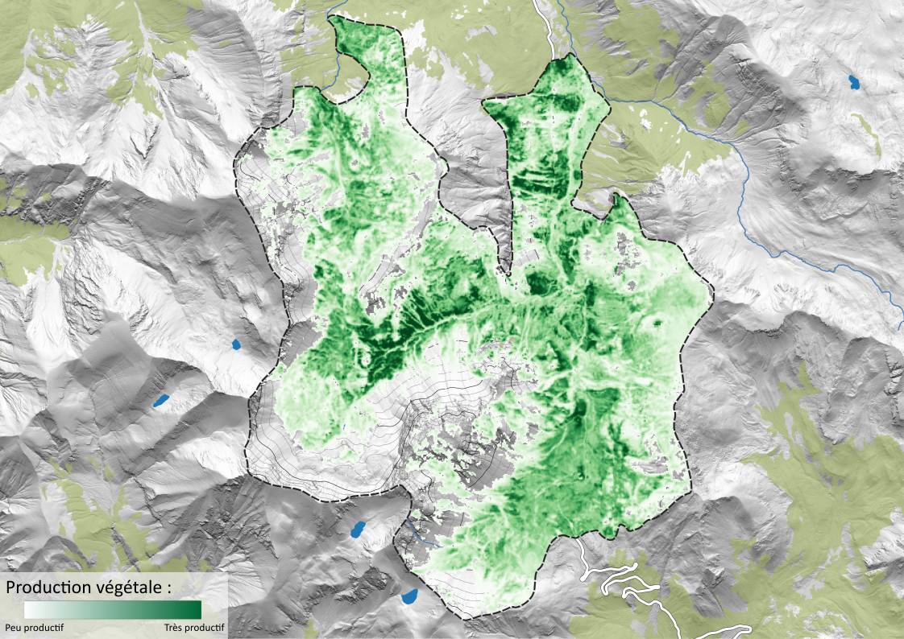
À partir des images Sentinel-2 (HR-VPP, 20 m), nous caractérisons les phases de la pousse de l’herbe (croissance, maturité, sénescence) pour chaque saison, renseignant indirectement la qualité de la ressource pastorale.